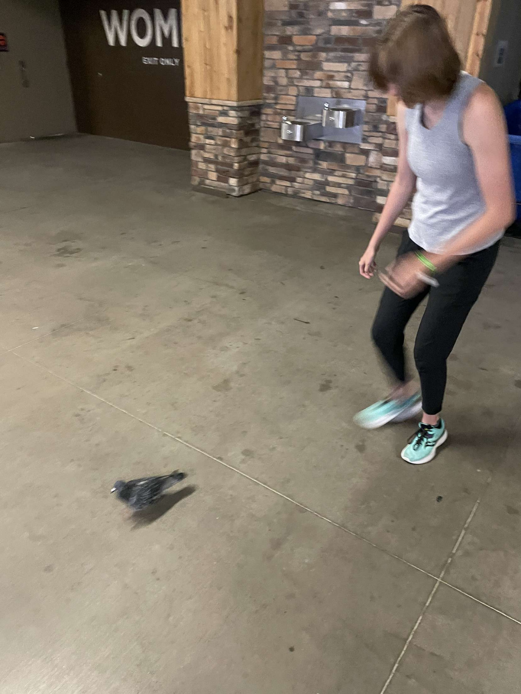

Fun Quotes!
- "art is not what you see, but what you make others see." -Edgar Degas
- "the world is but a canvus of our imagination."-Henry David Thoreau
- "vison is the art of seeing what is invisible to others." -Jonathan Swift
Spontaneous thoughts
- I love Skiing, it is so fun, but when it gets windy, it sucks. the snow hits you in the face and it hurts so bad.
- beans on toast
- Acrylic paint is best and no one can change my mind. Water color is a pain, and oil paint never dries, it literally takes ages :,)
